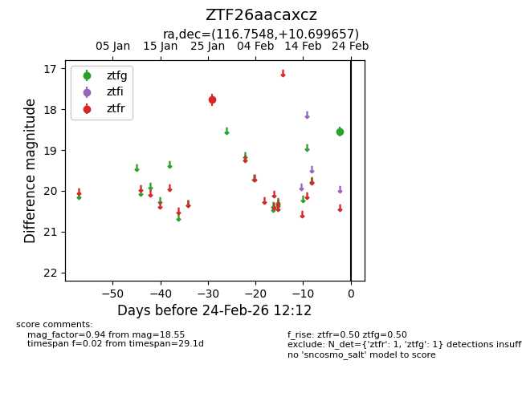
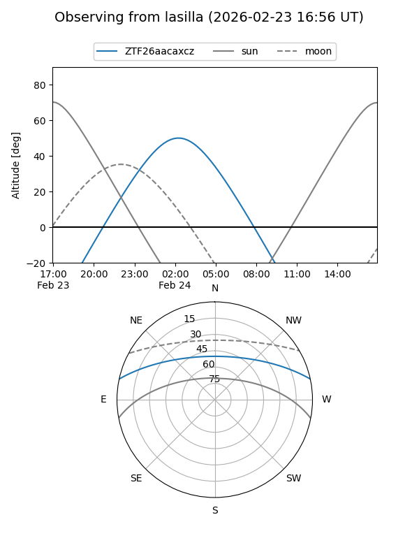
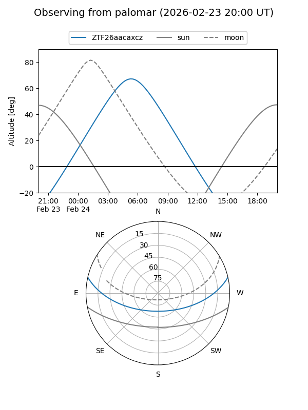

ZTF26aacaxcz
Target ZTF26aacaxcz at 2026-02-24 12:13
Aliases and brokers:
FINK: link
Lasair: link
ALeRCE: link
alt names
ZTF26aacaxcz (ztf,fink_ztf)
Coordinates:
equatorial (ra, dec) = 116.7548,+10.69966
equatorial (HMS+DMS) = 07:47:01.15,+10:41:58.77
galactic (l, b) = (209.4741,+17.13785)
Flags:
Photometry:
last ztfg=18.55, ztfr=17.77
1 ztfg, 1 ztfr detections
Lightcurve

Visibility


Additional plots